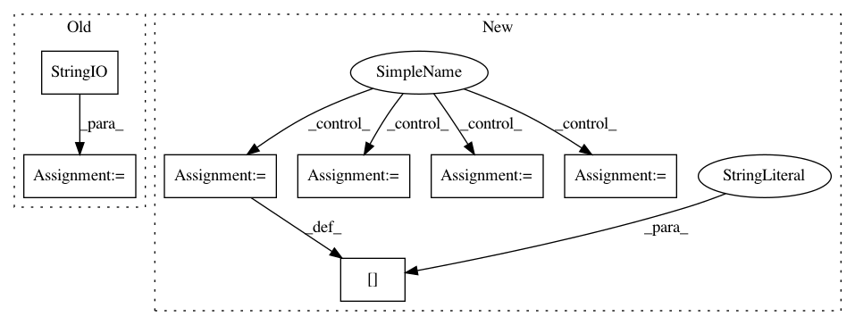

37f58cc580da8735ae5a259d4cb4ba0b8701e78e,tests/test_pytorch_data_teacher.py,TestPytorchDataTeacher,test_pyt_preprocess,#TestPytorchDataTeacher#,88
Before Change
return agent.observe(act), agent
print("Testing test_pyt_preprocess action equivalent to observation")
ff = io.StringIO()
with redirect_stdout(ff):
defaults = parser_defaults.copy()
defaults["batch_size"] = 1
defaults["datatype"] = "train:stream:ordered"
After Change
defaults["datatype"] = "train:stream:ordered"
// Get processed act from agent
defaults["model_file"] = os.path.join(tmpdir, "model")
defaults["dict_file"] = os.path.join(tmpdir, "model.dict")
agent_processed_observation, agent1 = get_teacher_act(defaults)
// Get preprocessed act from teacher
defaults["model_file"] = os.path.join(tmpdir, "model")
defaults["dict_file"] = os.path.join(tmpdir, "model.dict")
defaults["pytorch_preprocess"] = True
teacher_processed_act, agent2 = get_teacher_act(defaults, teacher_processed=True) // noqa: E501
for key in agent_processed_observation:
In pattern: SUPERPATTERN
Frequency: 3
Non-data size: 7
Instances
Project Name: facebookresearch/ParlAI
Commit Name: 37f58cc580da8735ae5a259d4cb4ba0b8701e78e
Time: 2019-02-08
Author: roller@fb.com
File Name: tests/test_pytorch_data_teacher.py
Class Name: TestPytorchDataTeacher
Method Name: test_pyt_preprocess
Project Name: mathics/Mathics
Commit Name: c728aab9c6d61faf55900a3990183c3d4614d6b4
Time: 2019-06-05
Author: matera@fisica.unlp.edu.ar
File Name: mathics/builtin/pymimesniffer/magic.py
Class Name: MagicDetector
Method Name: match
Project Name: facebookresearch/ParlAI
Commit Name: 37f58cc580da8735ae5a259d4cb4ba0b8701e78e
Time: 2019-02-08
Author: roller@fb.com
File Name: tests/test_pytorch_data_teacher.py
Class Name: TestPytorchDataTeacher
Method Name: test_valid_pyt_batchsort